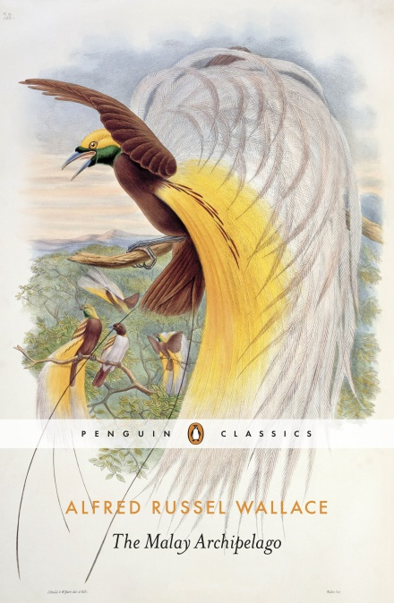
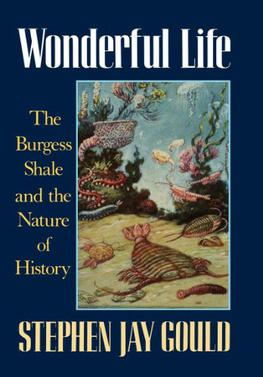
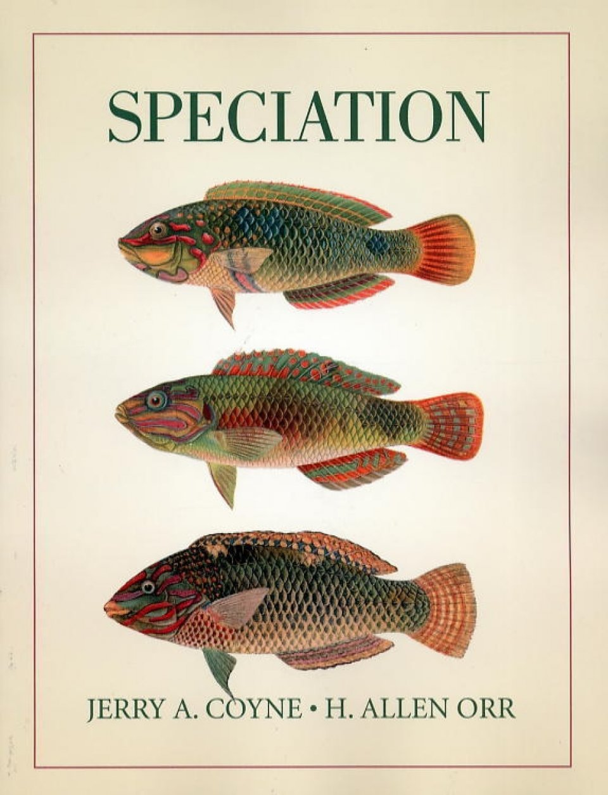
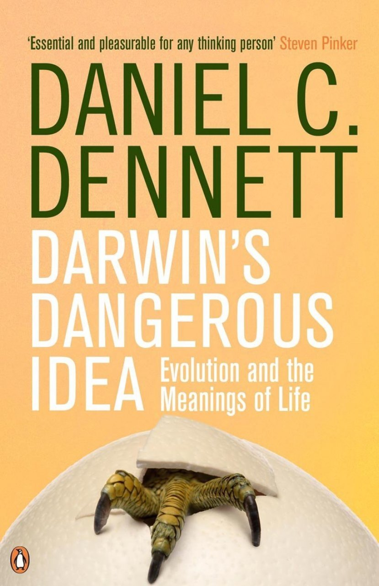
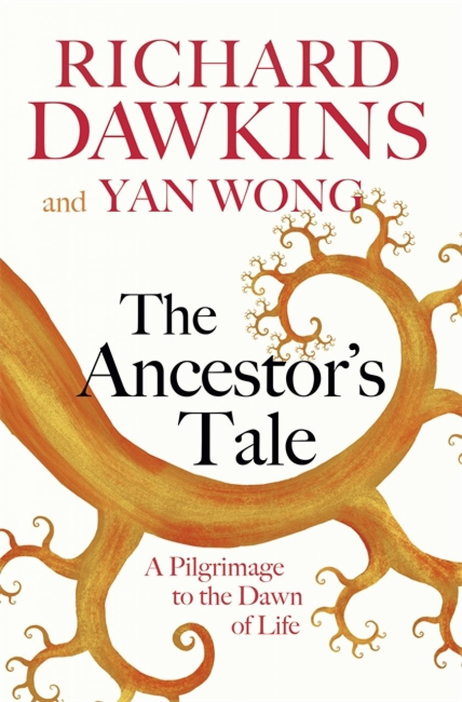
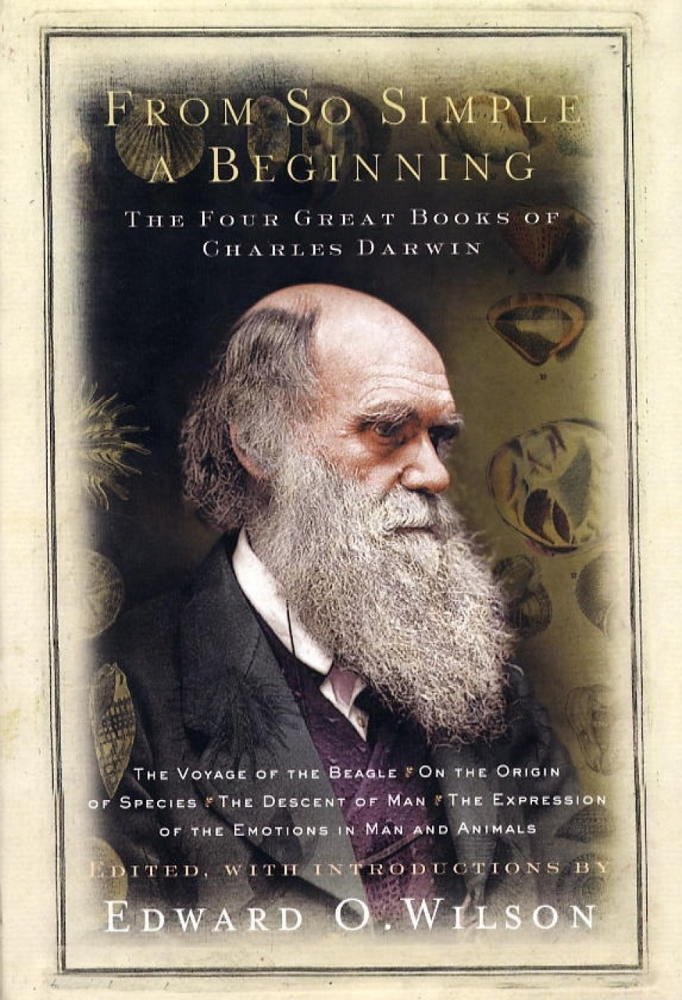
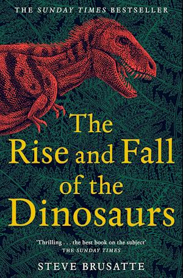
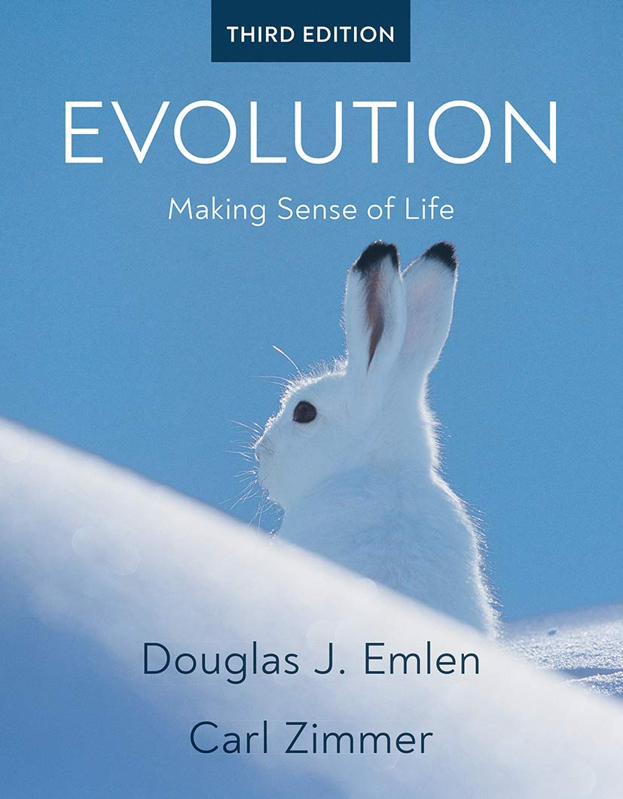
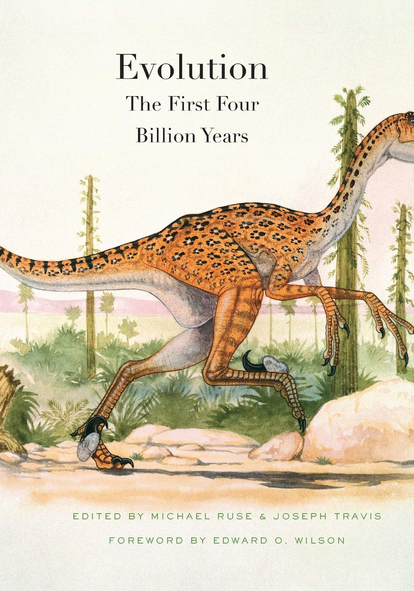
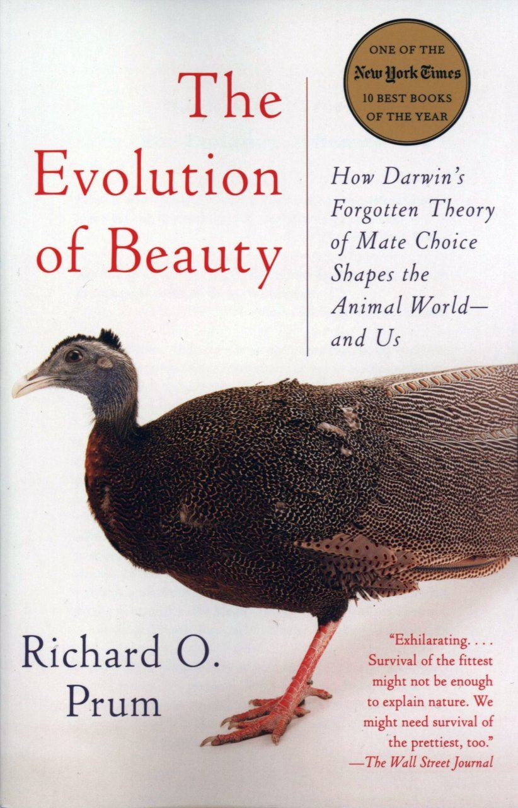

myReads/
I read quite a few Science Communication books throughout my bachelor times in Natal. Undoubtedly, titles such as The Drunkard's Walk and Lonely Planets greatly contributed to my initial scientic education. Although I still very much harbour a desire to read on various scientific subjects (I really like Physics, for instance), at some point one must focus on a specific field considering the short half-life of a human begin, and thus my reading of this kind of genre is no longer as diverse as it once was. Moreoever, by the end of my PhD in Copenhagen, I became rather interested in Literature, and I have been trying to catch up reading the Classics. Should you be curious to see which books I have read on these fronts, you are welcome to check my profile on goodreads.
Having said that, what I present below is a list of titles revolving round the two subjects I intend to expertise, namely Evolutionary Biology & Philosophy of Science. The books I have already read (at least once) are marked in green, and a short commentary is provided. Please acknowledge that this is for my own personal recording, and my impressions on these titles should be taken with care. Else, I have decided to list them in a chronological order because I find it revealing to realise how things unfolded historically. For instance, Huxley published his book on the evolution of Homo sapiens 8 years before Darwin presented his own work on this subject; or that Wallaced published his book on Natural Selection 20 years after Darwin's famous title had been published.
Classics Works/
- Zoonomia; or the Laws of Organic Life | Erasmus Darwin (1794)
- Zoological Philosophy, or Exposition with Regard to the Natural History of Animals | Jean-Baptiste Lamarck (1809)
- The Voyage of the Beagle | Charles Darwin (1839)
- On the Origin of Species | Charles Darwin (1859)
- Evidence As To Man’s Place In Nature | Thomas Huxley (1863)
- The Malay Archipelago | Alfred Wallace (1869)
- The Descent of Man, and Selection in Relation to Sex | Charles Darwin (1871)
- The Expression of the Emotions in Man and Animals | Charles Darwin (1872)
- Darwinism: An Exposition of the Theory of Natural Selection, with Some of Its Applications | Alfred Wallace (1889)




Modern Works/
- The Selfish Gene | Richard Dawkins (1976)
- The Mismeasure of Man | Stephen Jay Gould (1981)
- The Extended Phenotype | Richard Dawkins (1982)
- The Blind Watchmaker | Richard Dawkins (1986)
- Wonderful Life | Stephen Jay Gould (1989)
- The Third Chimpanzee | Jared Diamond (1992)
- Darwin’s Dangerous Idea | Daniel Dennett (1995)
- The Major Transitions in Evolution | John Maynard Smith & Eörs Szathmáry (1995)
- The Beak of the Finch | Jonathan Weiner (1995)
- Evolution: What the Fossils Say and Why It Matters | Donald Prothero (2007)
- Why Evolution is True | Jerry Coyne (2009)
- Evolution: The First Four Billion Years | Michael Ruse & Joseph Travis (2009)
- The Link: Uncovering Our Earliest Ancestor | Colin Tudge (2009)
- Life Ascending: The Ten Great Inventions of Evolution | Nick lane (2010)
- The Ancestor’s Tale | Richard Dawkins & Yan Wong (2016)
- Improbable Destinies | Jonathan Losos (2017)
- The Evolution of Beauty | Richard O. Prum (2018)




Textbooks/
- Genetics and the Origin of Species | Theodosius Dobzhansky (1937)
- Evolution: The Modern Synthesis | Julian Huxley (1942)
- Systematics and the Origin of Species | Ernst Mayr (1942)
- The Growth of Biological Thought: Diversity, Evolution, and Inheritance | Ernst Mayr (1982)
- Toward a New Philosophy of Biology: Observations of an Evolutionist | Ernst Mayr (1988)
- What Evolution Is | Ernst Mayr (2001)
- Speciation | Jerry Coyne & Allen Orr (2004)
- Evolution: the Extended Synthesis | Massimo Pigliucci & Gerd B. Müller (2010)
- Evolutionary Analysis — 5th Edition | Jon Herron & Scott Freeman (2013)
- Essential Readings in Evolutionary Biology | Francisco Ayala & John Avise (2014)
- Evolution — 4th Edition | Douglas Futuyma & Mark Kirkpatrick (2017)
- Evolution: Making Sense of Life — 3rd Edition | Douglas Emlen & Carl Zimmer (2019)




Biographies/
- The Autobiography of Charles Darwin | Darwin (1887)
- My Life: A Record of Events and Opinion | Wallace (1905)
- Darwin: The Life of a Tormented Evolutionist | Adrian Desmond & James Moore (1994)
- Charles Darwin: A Biography / Vol. 1 — Voyaging | Janet Browne (1995)
- Charles Darwin: A Biography / Vol. 2 — The Power of Place | Janet Browne (1995)
- Alfred Russel Wallace: A Life | Peter Raby (2001)
- Alfred Russel Wallace: A Rediscovered Life | Michael Flannery (2011)
- The Invention of Nature: Alexander von Humboldt’s New World | Andrea Wulf (2015)
- A Modest Genius: The Story of Darwin’s Life and How His Ideas Changed Everything | Hanne Strager (2016)

